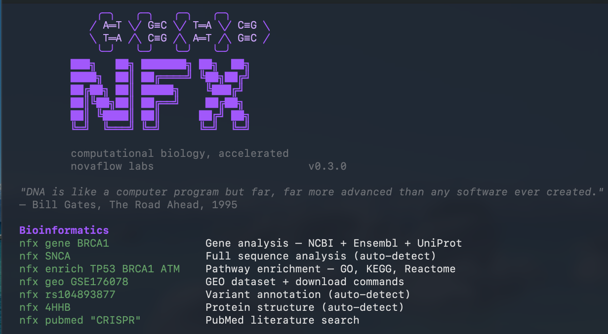
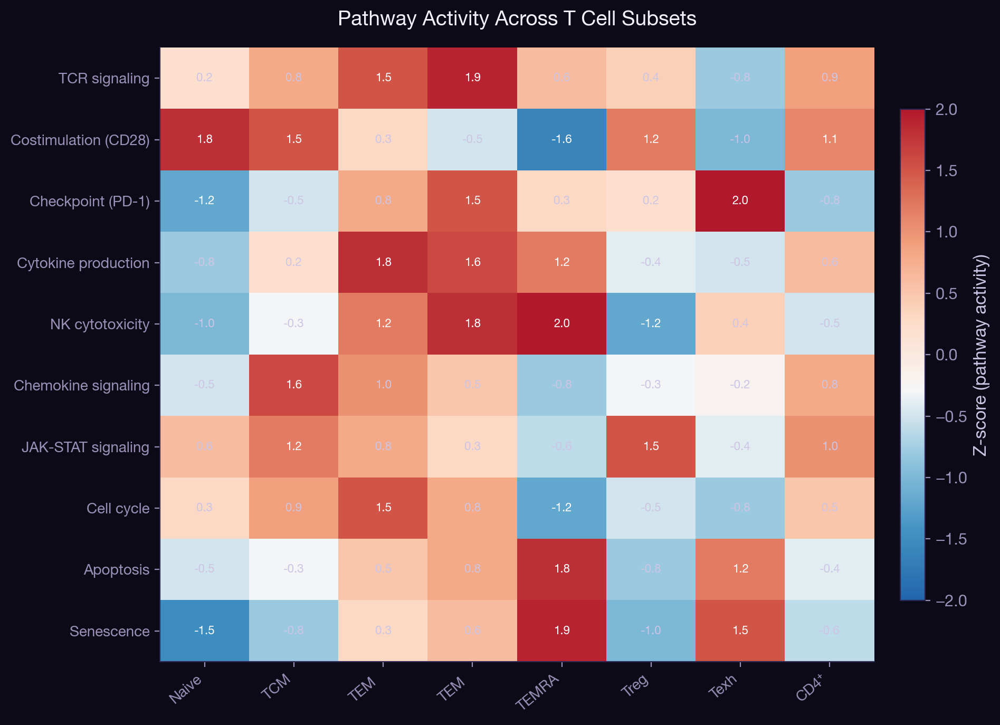
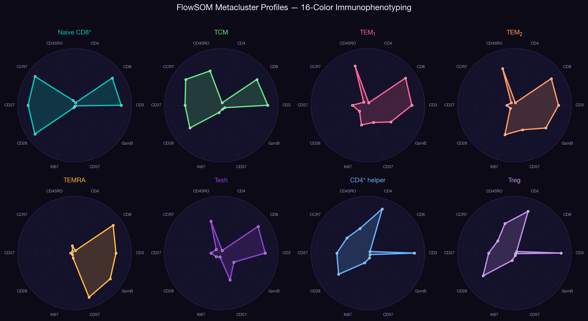

Computational biology, from the terminal.
An AI-native bioinformatics CLI for the modern lab.
Every database a biologist needs.
One command. One terminal.
Stop tabbing between NCBI, Ensembl, UniProt, PDB, AlphaFold, Enrichr, GEO, PubMed, ClinVar. nfx queries them all in parallel, synthesizes the result, and renders it where you already are - the shell.
Built for how research actually happens
-
→
Sub-2-second queriesParallel fetches across 10+ public bio APIs. No tabs. No waiting.
-
→
Smart resolutionGive it a gene symbol, a UniProt ID, a PDB code, an rsID - it figures out what you meant.
-
→
Renders in the terminalStructures in braille, sequences color-coded by confidence, clickable links via OSC 8.
-
→
Novaflow.ai synthesisEvery result can be summarized by a senior comp-bio assistant - never hallucinated, always sourced.
$ nfx SNCA Resolving SNCA... Fetching AlphaFold for P37840... ━━ ALPHAFOLD: SNCA ━━━━━━━━━━━━━━━━━━━━ Protein Alpha-synuclein Gene SNCA UniProt P37840 (SYUA_HUMAN) Organism Homo sapiens Length 140 residues Global pLDDT 75.2 Model AF-P37840-F1 (v6) ── 1.3s | AlphaFold + UniProt ──
3D protein structure.
Rendered in your terminal.
No PyMOL. No Chimera. No browser tab. nfx af <gene> resolves the symbol, fetches the AlphaFold prediction, and ray-traces the fold in unicode braille - depth-shaded and colored by per-residue pLDDT confidence.
What you're looking at
- 3DBraille ray-tracingUnicode braille (8 dots per cell) gives 2× resolution. Depth fog and tube shading convey 3D topology.
- pLDDTPer-residue confidenceSequence is color-coded by AlphaFold's pLDDT score - instant read on which regions are reliable.
- SSSecondary structureHelix (═), sheet (▶), coil (─) annotated under every residue.
You can see disorder at a glance.
A globular protein and an intrinsically disordered protein look identical in a single pLDDT number. The terminal render makes the difference obvious - instantly, no Python, no PyMOL.
→ SNCA and TP53 have nearly identical mean pLDDT (75.2 vs 75.1) - but the per-residue track tells a completely different biological story. That's what the terminal render shows in 1.6 seconds.
A research lab, in one binary.
14 subcommands. Click any card to watch it run live.
Every paper hands you a different identifier.
You shouldn't have to know which database serves which one.
A single Cell paper might cite SNCA, ENSG00000145335, P37840, rs104893877, and 6XGE in the same paragraph. Five identifiers, five databases, five URL formats - and you have to memorize the mapping just to read the figure.
^rs\d+$ → variant VEP^\d[A-Z0-9]{3}$ → PDB structure^GSE\d+$ → GEO dataset^ENSG\d+$ → Ensembl sequence^[A-Z][0-9][A-Z0-9]{3}[0-9]$ → UniProtnfx enrch → did you mean enrich?Eleven scientist agents. Each one a specialist.
All of them composable.
When a question crosses domains, call the scientist who'd know — or chain them. Each agent is a Novaflow.ai persona grounded in one field. Click any card to see the quote, novel analysis, and a real dataset it runs on today.
Cross-domain chaining: the real power
Real terminal output, not mockups.
Each scientist agent generates live, reproducible analysis from public APIs. Click any card to watch the code execute and see the output render in real time.


Every terminal-AI pattern the field converged on,
built into nfx from day one.
Project memory, settings hierarchy, custom commands, scientist agents, model-invoked skills, health checks, headless mode - all wired into the bioinformatics workflow.
NFX.md · lab context (genes, panels, citation style).nfx/settings.json + .local.json + ~/.nfx/.nfx/commands/ per-project research recipes.nfx/skills/ - DE analysis, multi-omics, spatial-tx, polysomeinit / doctor / config / memory / cost / clearnfx init, doctor, config, memory, ...cli -p "...")nfx <query> already pipes - every command is headlessPreToolUse · PostToolUse · SessionStart)PreQuery · PostQuery · SessionStart - citation logging + cache hooksnfx --sandbox · containerized · no host filesystem accessThe whole public bio stack,
unified behind one CLI.
Every query hits authoritative sources. Nothing scraped. Nothing cached stale. Nothing fabricated.
Start-to-finish research workflows.
Each card chains multiple nfx commands into one recorded session - gene workup, driver triage, structural deep-dive, RNA velocity. Click to watch the full run.
From a single gene to a full research brief, in minutes.
Click Run Workflow to watch the full SNCA investigation execute step by step - five databases, one terminal.
NCBI + Ensembl + UniProt → name, function, location
AlphaFold prediction → fold quality, disorder profile
Ensembl VEP → A53T missense, pathogenic
Enrichr → KEGG, Reactome, GO Biological Process
PubMed → 12 recent papers, DOI-linked
R/Bioconductor's entire ecosystem.
From your terminal. No R required.
Pathway enrichment, GSEA, FlowSOM clustering, trajectory inference, differential abundance - wired into the nfx CLI with publication-quality and interactive HTML output.
One command → 8 publication figures + 3 interactive dashboards
Click Run Pipeline to watch nfx analyze a 16-color immunophenotyping panel through the full Bioconductor stack.
65,016 events × 16 channels (BD FACSAria)
10×10 SOM → 8 metaclusters (silhouette=0.39)
Slingshot-inspired MST: Naive → TCM → TEM → TEMRA
KEGG + Reactome + GO BP on marker→gene mappings
fgsea on ranked effector signature (NES=2.53)
8 PNG + 3 interactive HTML → output/bioc_report/
Real-world workflows,
from the command line.
Publication figures + interactive dashboards.
All from one CLI command.
The terminal is the last unmanaged surface
in computational biology.
Cloud notebooks, electronic lab notebooks, LIMS, FlowJo, Geneious, Benchling - every other tool a biologist touches has been productized. The shell is where the actual work happens, and it's still raw. nfx is what happens when you treat the terminal like a product.
v1.0
20+ commands. 10 APIs. AlphaFold rendering. Bioconductor integration. 11 scientist agents. Research, lit review, and audit workflows.
New in v1.0
Source-grounded research briefs. Literature reviews with synthesis. Paper-vs-code audits. Full agentic workflows.
v1.1
Native multi-omics analysis. MCP bio servers. Integrated with Novaflow's pipeline products.